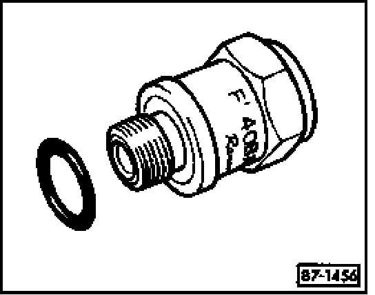

High Pressure Safety Valve HVAC: Description and Operation
Pressure Relief Valve

The pressure relief valve is integrated with compressor. At pressures above 40 bar (580 psi), the pressure relief valve opens to air outlet excessive pressure. When the system pressure is reduced, the valve closes to prevent total refrigerant loss.
An adhesive cap on the end of the pressure relief valve pops out when the valve has opened.